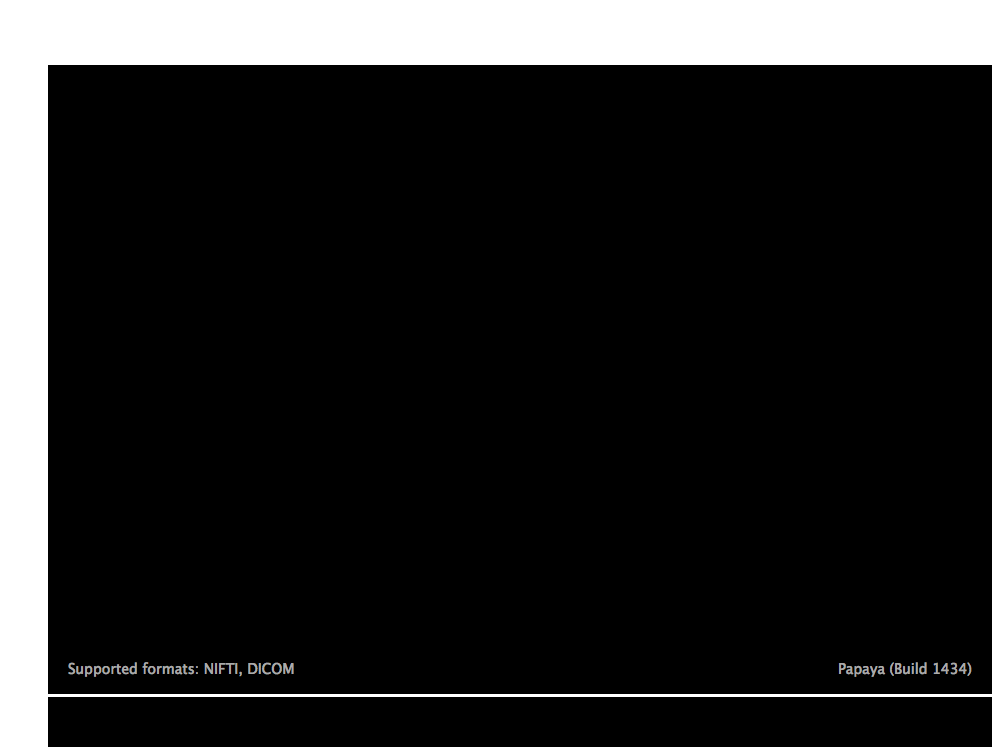

papayaWidget
The goal of papayaWidget is to include a papaya object in an Rmarkdown document.
See the full docs at http://johnmuschelli.com/papayaWidget.
Installation
You can install the papayaWidget using:
# install.packages("papayaWidget")
devtools::install_github("muschellij2/papayaWidget")Example
This is a basic example which shows you how to solve a common problem:
library(kirby21.t1)
library(papayaWidget)
library(neurobase)
#> Loading required package: oro.nifti
#> oro.nifti 0.9.11
outdir = tempdir()
download_t1_data(outdir = outdir)
#> cloning into '/var/folders/1s/wrtqcpxn685_zk570bnx9_rr0000gr/T//RtmpaCawuX/fileff7e5a955b14/kirby21.t1'...
#> Receiving objects: 1% (2/117), 8 kb
#> Receiving objects: 11% (13/117), 8 kb
#> Receiving objects: 21% (25/117), 8 kb
#> Receiving objects: 31% (37/117), 8 kb
#> Receiving objects: 41% (48/117), 8 kb
#> Receiving objects: 51% (60/117), 30699 kb
#> Receiving objects: 61% (72/117), 46544 kb
#> Receiving objects: 71% (84/117), 46544 kb
#> Receiving objects: 81% (95/117), 46544 kb
#> Receiving objects: 91% (107/117), 46544 kb
#> Receiving objects: 100% (117/117), 46544 kb, done.
#> [1] TRUE
fname = kirby21.t1::get_t1_filenames(outdir = outdir)
fname = fname[1]
img = readnii(fname)
papaya(img)